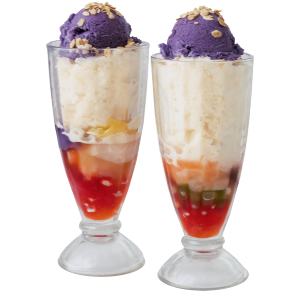
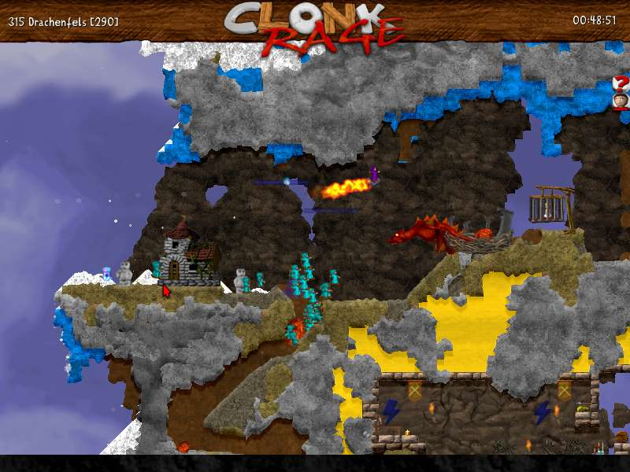
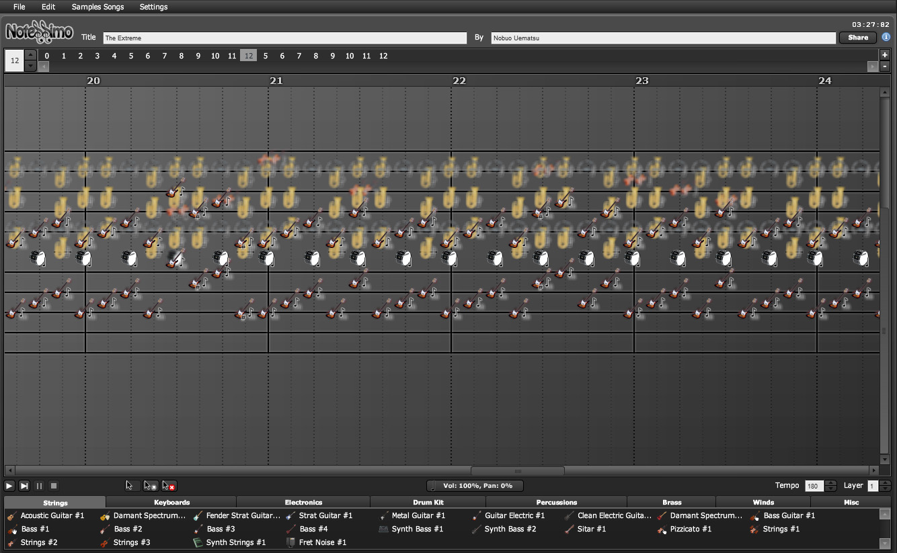
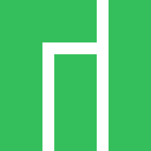
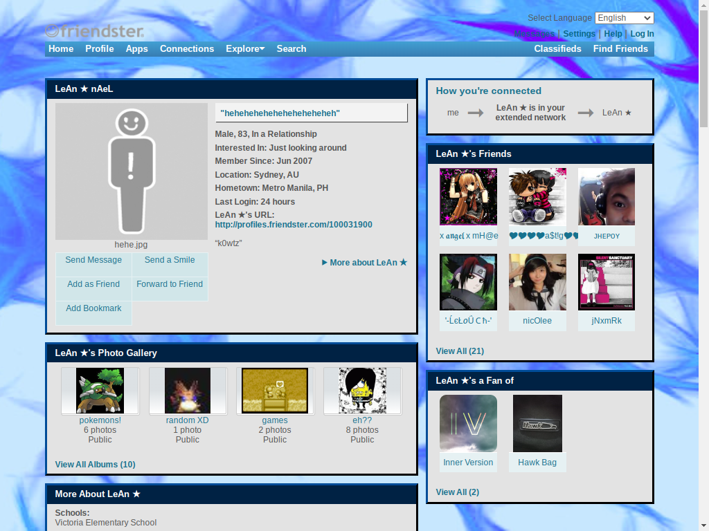

👤 You are visitor number
Thank you for visiting my website!
Professional history
(i.e. paid work 💸)
Here’s a peek of my -year career so far:
Canva (present)
Canva is a creative platform where you can design anything. You can design anything at Canva com. Anything at all. The only limit is yourself. Welcome to Zonvocom…
I built many things here, from frontend to backend, pages and webapps, and more!
Google (2023)
Worked on Google Maps, specifically Maps for Android Auto and Automotive. In short, Maps for cars.
Cars are… unique, as a computer hardware, requiring different user interaction paradigms. Rotary dials, dangerous touchscreens, and wonky screen sizes.
Convene (2018)
Convene is a collaborative platform. One of its main components is a real-time collaborative document reviewing tool where you can make annotations, comments, sticky notes, and drawings on documents with other users.
I worked on the Android app where we implemented real-time chat, touch gestures for multi-user drawing, and other features.
Unprofessional history
(i.e. unpaid work 💙)
Here are some open source projects where I contributed some code (sporadically):
- robolectric/robolectric Android testing framework
- minetest/minetest C++ game/engine
- mapbox/polylabel JS map library
- canva-public/rocketbot NodeJS CI tool
- Kalabasa/FreeformGestureDetector Android interaction library
- lanoxx/tilda Linux terminal
Odd jobs
Long ago when I was a high school student, I freelanced.
Flash ads programmer
I created interactive, procedurally animated Internet ads in Flash for clients who wanted to advertise (i.e., annoy users) on the information superhighway™.
Indirectly contributed to the rise of ad-blockers.
Powerpoint “engineer”
I created interactive, animated Powerpoint presentations about biochemsitry for some learning institute whose name I’ve already forgotten.
I’m currently based in Sydney 🇦🇺
I’m from the Philippines! 🇵🇭

My favourite dessert is halo-halo. 😋
GitHub activity
🎓 I studied computer science at the University of the Philippines!
The University of the Philippines was established when the Philippines was still a territory / colony of the United States. The university was destroyed during the World War 2. Uh, those are your random facts, I guess.
365
I got to a 365-day streak on Duolingo!
546
I have 546 reputation on Stack Overflow!
Clonk

My all-time favourite video game is Clonk. It’s a series of 2D games with destructible terrain (a “falling-sand game”) featuring a mix of action, strategy, idle, sandbox, platforming, and puzzle gameplay. Here’s the official trailer.
Story
I’ve spent countless hours of my childhood playing this game and tinkering with its modding features.
The game has a built-in mod framework with its own C-like scripting language called C4Script (It has pointers!). It was my first programming experience!
I started by making custom levels and scenarios. Then moved on to tweaking, adding behavior to existing objects, making too many bomb variants. The most fun I had was when I reached the point where I could design and implement my own magic spells and particle effects! I even tried to make AI enemy characters.
I believe that this game played a big part in shaping who I am today.
Notessimo

One of my hobbies is composing music. It all started with Notessimo , a free Flash game that I stumbled upon Kongregate.
Story
Well, as a kid, I’ve always played computer games. In my quest for new games, I found Notessimo through the Flash game portal Kongregate. It’s a simple easy-to-use music composition software, similar to the music maker part of the SNES game Mario Paint.
I then found out that the game had an official website notessimo.net which was just a phpBB forum back then. The forum community around the game were very encouraging and helpful which really helped me develop this music interest.
Before long, I was producing song after song and eventually got a song featured on the home page!
I eventually moved to a “real” DAW, but I will always remember fondly the Flash game Notessimo.

i use manjaro btw.
1000
I can count up to 1000, but have never done so.
The game I spent the most time on Steam is currently Dota 2, followed by Factorio.
461
I have collected 461 Korok Seeds in The Legend of Zelda: Breath of the Wild.
IDE reviews
I reviewed IDEs so you don’t have to. Well, you don’t have to either way.
Here are my IDE reviews (you’re not gonna believe #14!)
My 15 minutes of internet fame:
- My article at /notes/dynamic-patrol-stealth-games/ got featured in a… gamedev newsletter?!
- Wikawik language map seems to get some visitors regularly from the Philippines.
- My Game of Life simulation on The Powder Toy, an open-source falling-sand sandbox game, was a frontpager more than a decade ago, but is still getting views!
- I got featured on Notessimo, a music-maker software!
- I got featured on Incredibots, a physics sandbox game! Sadly, no link.
Check out my Friendster profile recreation! (warning: autoplay music)

#3F6C86
is my favourite colour
as of 12 June 2023 13:32